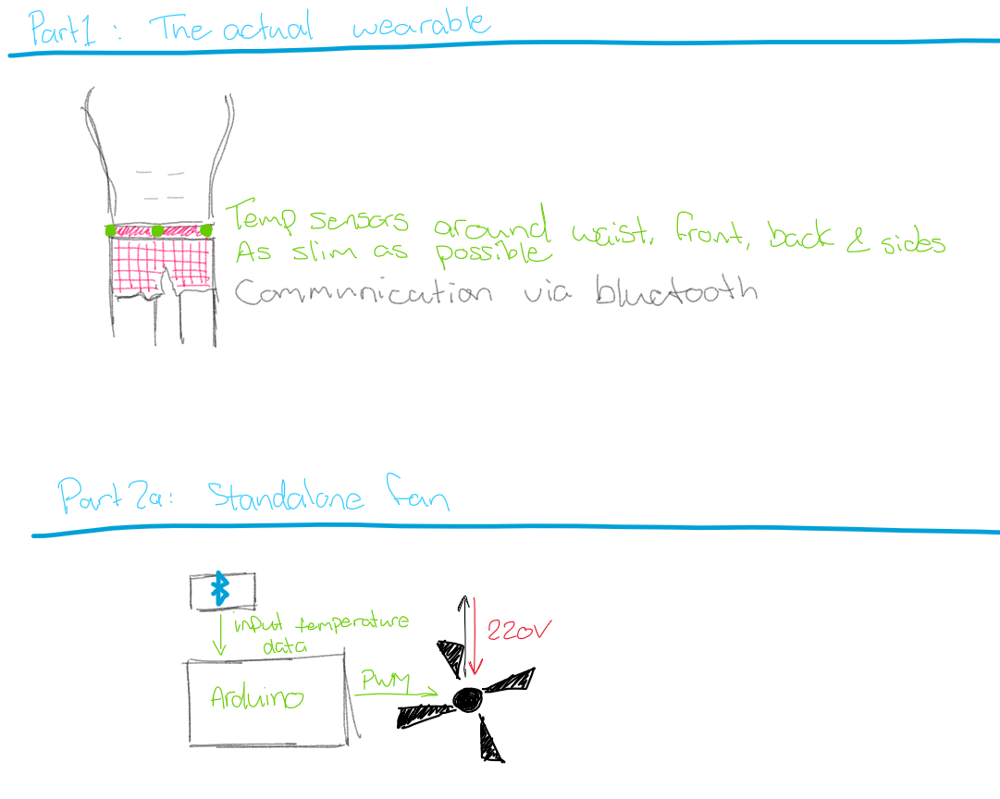

Research
⇑Spire Health Tag
I've lately been doing some research into sleep and how you can sleep enough in terms of quantity (hours) but still get bad sleep. The only way you can really know about this is through sleep tracking. I tried it on my phone, but it didn't really provide me with the results I wanted. That's how I stumbled onto the Spire Health Tag. The tag is a lot more than just a sleep tracker, but that's the main thing I'm interested in for now.
The Spire Health App promises to give you proper advice on your sleeping habits, in combination with your breathing and heart rate. Other than that it also promises to provide the same for your stress levels, using your other health metrics to tell you how stressed you are and provide you with tips on how to de-stress.
SkinTrack - Carnegie Mellon
For something entirely different: I came across this article on PopSci which talks about tech that can track the position of your finger across your skin. I think it's very interesting, mainly because it can be used in a very broad context. It could be used to much more easily control small screens, as pointed out in the video, but I think it also has potential as a remote-control device for larger screens or VR, in a similar way that magic leap tried to do with their first product.
SignAloud - University of Washington
These gloves can translate sign language to "regular" English by analysing your gestures and using a speaker to say the word you just signed. I thought this would be a pretty big deal for deaf people, but this critique states that the engineers didn't properly take their end users into account and only partially solved their problem - sign language is much more than gestures, including facial expressions and movements in other parts of the body.
On one hand, as a designer, I'm very much a fan of involving your users in the design process and improving your products that way. Only thinking about the hand gestures was insulting to the author of the critique, who is deaf herself. I can really see where she's coming from and they definitely should have involved actual deaf people in their process. On the other hand though, I'm left wondering if a partial translation that allows only rudimentary communication between you and someone who doesn't know ASL isn't still better than nothing at all.
Experiment & Play
⇑Getting a temp
First I needed a way to measure temperature. We already covered this during the Arduino workshops with exersize 10, so I dug up what I did back then and calibrated the NTC-resistor.
Measuring fan speed
Second, to control a fan you need to measure it's speed. I found a tutorial online, built the circuit from there and ran the code. And it worked flawlessly! I didn't have the proper resistor, so I used the potmeter and measured out the proper resistance with that.
Controlling the fan
I built a new circuit, this time focused on changing the PWN frequency of the fan to change it's speed. I found a different piece of code which I used to control the fan speed.
Putting it all together
I combined all the code I found and made before into this beautiful piece of kit:
int pwmPin = 3; // digital PWM pin 9
int pwmVal = 1; // The PWM Value
int sensorPin = A0;
unsigned long time;
unsigned int rpm;
String stringRPM;
void setup(){
// generate 25kHz PWM pulse rate on Pin 3
pinMode(pwmPin, OUTPUT); // OCR2B sets duty cycle
// Set up Fast PWM on Pin 3
TCCR2A = 0x23; // COM2B1, WGM21, WGM20
// Set prescaler
TCCR2B = 0x0A; // WGM21, Prescaler = /8
// Set TOP and initialize duty cycle to zero(0)
OCR2A = 79; // TOP DO NOT CHANGE, SETS PWM PULSE RATE
OCR2B = 54; // duty cycle for Pin 3 (0-79) generates 1 500nS pulse even when 0 | minimum is 54 to start fan spin from 0 rpm
digitalWrite(2, HIGH); // Starts reading
pinMode(sensorPin, INPUT);
Serial.begin(9600);
}
void loop(){
unsigned int x;
int sensorValue=analogRead(sensorPin); // read sensorpin
Serial.println(sensorValue); // print to serial monitor
// calibration: 12C=370, 24C=500
delay(100); // wait
int t=map(sensorValue, 300, 550, 40, 79);
OCR2B=t;
}
char getRPMS() {
time=pulseIn(2, HIGH);
rpm=(1000000 * 60) / (time * 4);
stringRPM=String(rpm);
if (stringRPM.length() < 5) {
Serial.println(rpm, DEC);
}
}
Design & Build
⇑Sketching
I made a few sketches to more accurately depict how the product should work:
I first thought I'd use a wristband to sense the temperature, but that wouldn't make much sense. Your wrist is far away from your body, and not under the covers when you're warm. I decided to move to a waistband instead, to more accurately measure the temperature you're actually feeling. This does make it very important to make the band as thin and soft as possible, so that you're not uncomfortably laying on some hard piece of tech.
I also sketched the fan control piece, which can operate via Pulse-Width Modulation (PWM). This ensures a smooth ramping up and down of the fan. It works via bluetooth, so that you don't have any wires dangling off your body at night. An Arduino controls the fan in the same way I demonstrated in the experiment & play section, though ideally with a larger and quieter fan.
Reflect
⇑I really like how this project turned out, because it's actually solving a problem I personally have. The only thing that I don't really like is the fact that I can't actually build it right now, because I don't have a bluetooth radio nor the knowledge on how to use that to transmit data. I also feel like the different stages of the HCI setup got slightly mixed up, but I think that's all right.